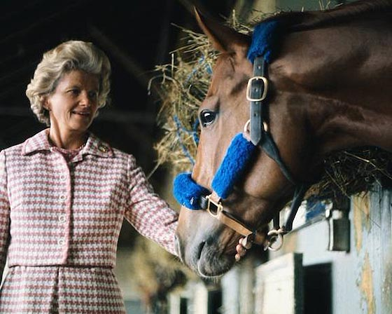
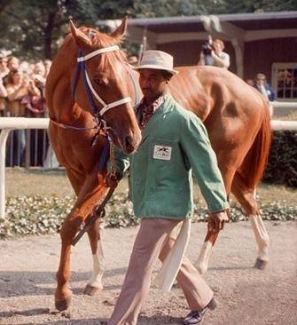
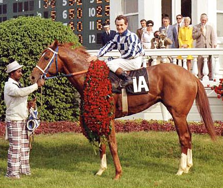
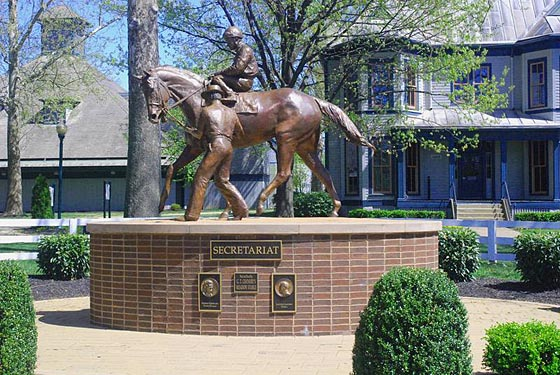

Секретариат (Secretariat)
Жеребца, который в далеком 1973 году стал первым в мире обладателем кубка Тройная Корона за последние двадцать пять лет, звали Секретариат. Родился от 30 марта 1970 года и прожил до 4 октября 1989 года. Именно он установил новые рекорды на скачках Тройной Короны, которые проходили в Кентукки на Дерби (1:59 2/5) и в Бельмонте на Стэйкс (2:24). Они и по сей день остаются не побежденными никем из современных лошадей. Отцом этой замечательной лошади был Болд Рулер (Bold Ruler), являющийся внуком Nearco и матерью Самсингроял (Somethingroyal). Секретариат родился на ферме Миоду в округе Кэролайн штата Вирджиния. Жеребец был собственностью Пенни Ченери, а тренировал его Люсьен Лорен. Жокеем был канадец Рон Теркотт, который проводил на Секретариате главные скачки. Цвета лошади были синий и белый (как у его конюшни Мидоу Ченери Пенсы, конюхом в которой был Эдди Свит), Секретариат был довольно высокой лошадью: 16,2 ладоней (66 дюймов, 168 см), а по весу составлял 1.175 фунтов (533 килограмма). Обхват груди у него был 75 дюймов.
Родословная
История жизни Секретариата началась с банального броска монеты в 1968 году между Кристофером Ченери из конюшни Мидоу и Огденом Фиппсом из конюшни Уитли Стэйба. Предложил подбросить монету Уитли Стэйб, которому принадлежал Болд Рулер (Bold Rulera). Тогда Болда Рулера считали за одного из самых важных жеребцов того времени. Он обладал шикарным балансом стойкости и скорости, своим собственным стилем и мог скакать на передах, развивая просто сногсшибательную скорость на дистанциях до 2000 метров. В 1957 году в Кентуки на Дерби он был третьим. После того, как его конная карьера закончилась, жеребец был отправлен на специальную конеферму Клейборн (Claiborne), но права на него все еще принадлежали Фиппсу. Это означало только одно: именно он будет крыть кобыл Фиппса по большей части, из-за чего совсем не многие из такого потомства смогли дойти до аукциона. Вышеупомянутый бросок монеты означал то, что Болд Рулер покроет кобылу два года подряд и появившееся потомство разделят поровну, но тот, кто отгадает монету, сможет забрать первого родившегося жеребенка. Это случилось в 1968 году. Именно тогда Ченери отослала кобылу Сомсинроял к Болд Рулеру, а в 1969 году от них был рожден жеребенок. Фиппс был победителем в броске монеты, поэтому забрал кобылку. Следующий рожденный жеребенок должен был достаться уже Мисс Ченери. И в том же году ее снова покрыли Болд Рулером. 30 марта в 0:10 кобыла Самсинроял (Somethingroyal) успешно родила ярко-красно каштанового жеребца, который имел узкую звездочку на лбу и трое белых носок. Тогда кличку жеребенку еще не дали. Секретарь конюшни по имени Элизабет Хэм представляла жокейской комиссии более десяти имен, но все они были в силу различных причин отклонены. И только на 11-й раз Хэм смогла уговорить Жокей-клуб дать жеребенку имя Секретариат, что ассоциировалось у нее с прошлой карьерой.Двухлетняя компания
Первая скачка Секретариата произошла в 4 июля 1972 года и в ней он смог занять лишь четвертое место, проиграв почти в четверти корпуса на ипподроме Акведук. Следующие пять скачек для него были исключительно победными и среди них были три очень важные скачки, в которых принимали участие лишь двухлетние лошади. Это были Сэнфорд Стэйкс и Хоупфул Стейкс на ипподроме Сарагота и Фьютюрити Стейкс на ипподроме Бельмонт. Во втором случае Секретариат продемонстрировал просто неимоверное ускорение, обогнав восемь лошадей прямо на финишной прямой и победив с отрывом в пять корпусов. Также была еще одна интересная скачка в Шампейн Стейкс, происходящая в Бельмонте, где Секретариат победил, но был дисквалифицирован со своего законного первого места до второго, якобы за помеху Стоп Мюзик, которому и отдали первое место. Секретариат смог обыграть Стоп Мюзик еще раз, когда взял матч-реванш на ЛорелФютюрити. Там он смог обыграть своего соперника на целых 8 корпусов. Таким образом, сезон был окончен его победой в Гаден Стейт Фютюрити. Именно тогда была получена премия Эклипс, которую выдают в категории Лучший. Секретариат и Пенни Ченери, его "мама"
Подготовка к Кентукки Дербки
Свою трехлетнюю кампанию Секретариат начал с легкой победы в Бей Шо Стейке на скачке происходившей на ипподроме Акведук. После, на Госам Стейкс (Gotham Stakes), он опять выиграл сложную скачку с места до места, и это была его первая победа в данном направлении. 1200 метров он смог преодолеть всего за 1:08:06, а в целом времени на одну милю у него ушло 1:33:04, что является мировым рекордом ипподромов. Однако в следующий раз он смог прийти только третьим и было это в Вуд Мемориал, где расстояние составило 1800 метров. В той скачке победителем был Энжел Лайт и Шам, который являлся победителем Санты Аниты Дерби в последней скачке при подготовке к Кентукки Дерби.Кентукки Дерби
Несмотря на то, что в Вед Мемориал был проигрыш, все букмейкеры посчитали Секретариата одним из фаворитов скачки и ставки были 3-2 против второго фаворита Шама. Было это в 1973 году в Кентукки Дерби. Это была вторая победа Секретариата и, хотя он стартовал хуже всех, уже на финишной прямой он смог объехать всех конкурентов и выиграл этот заезд с отрывом более чем в 2 корпуса. Это был рекорд. Секретариат смог проехать всю трассу за 1:59:04. Каждые 400 метров жеребец преодолевал намного быстрее предыдущих и последовательные мильные четверти составили 25 1/5, 24, 23 4/5, 23 2/5, и 23, что означало, что он смог ускорится от старта до финиша очень эффективно. Последним (до него) победителем был Монаркос, который пробежал этот отрезок за 2 минуты. Секретариат и конюх Эдди Свит
Также одна из популярных скачек, в которой Секретариат стартовал последним, но перед первым же поворотом смог занять лидирующее место. Скачка была успешно доведена до конца, так как противостоять ему никто не смог. Шам, главный конкурент, опять пришел вторым, а победитель смог выиграть скачку с отрывом в два корпуса. Но время этого круга оказалось очень спорным, так как, хотя судейский таймер и зафиксировал 1:55, но толпа, направившись в середину после окончания скачки, сломала электронный таймер. Время замерял и ипподромный клерк, который заявил о 1:54:04. Но были еще и два довольно известных журналиста, которые сказали, что все-таки было 1:53:04. Это было бы рекордом, так как предыдущий рекордсмен смог завершить этот круг за 1:54. Пытались определить время скачки путем наложения записей с того заезда и с этого, и судя по нему, получилось что Секретариат пришел первым, но метод этот был очень ненадежен. Жокейский клуб, который в то время управлял замером времени на ипподроме, отказался принимать такие результаты и зафиксировал официально 1:54. Однако рядом с этим временем был напечатан и неофициальный результат в 1:53, что было сделано впервые за историю скачек вообще. Немного позже такие люди, как Танкс Проспет и Луи Куэторз смогли подтвердить время 1:53:04, и Секретариат стал негласным рекордсменом. Но уже в 1991 году некий Фарма Вей смог пройти данную трассу за 1:52:04, чем установил новый абсолютный рекорд. В то же время Секретариат стал готовиться к последней скачке Тройной Короны Бельмонт Стейкс, обретя неимоверную популярность и став чуть ли не национальным героем страны.
KENTUCKY DERBY — May 5th, 1973
9 июня 1973 года вместе с Секретариатом участвовали лишь четыре лошади.
Тогда в Бельмонт Стэйкс принял участие и Шам, который пришел в Дерби вторым
и в Прикнис также финишировал номером два. Остальные три лошади не имели
практически никаких шансов. В эту скачку Секретариат был объявлен главным фаворитом,
и ставки были очень высоки: 1-10. В тот день ипподром собрал более 67 тысяч человек.
Сразу же со старта Секретариат и Шам смогли оторваться от остальных лошадей более
чем на 10 корпусов, что создало просто невероятный пейс. Но уже после шести фарлонгов
(это где-то 1200 метров) Шам начал сильно уставать и в итоге пришел последним.
Секретариат же продолжал наращивать темп и отрывался от остальных лошадей все больше
и больше. Даже диктор Си-Би-Эс Андерсон Шик был очень удивлен и сравнивал Секретариата
с мчащейся машиной.
Победа Секретариата была безоговорочной и составила 31 корпус, что
составило новый рекорд в отрыве, который до этого дня составлял 25 корпусов.
Также был побит мировой рекорд прохождения по песку расстояния в 2400 метров
за 2:24. Он был улучшен всего на 2 секунды, но все-таки победителем и рекордсменом
стал именно Секретариат. Этот рекорд до сих пор не удалось побить еще никому.
За всю историю Американских Скачек Секретариат стал девятым по счету
обладателем уникальной Тройной Короны, которую он заслужил по праву. За
всю свою историю он победил в 16 из 21 скачек и смог заработать $1.316.808.
В 1972 году его объявили лошадью года и дали титул лучшего американского жеребца
Трехлетка и Чемпиона жеребца по траве.
Он произвел Канадиан Баунд, ставшего первым Чистокровным полуторником, который
продали более чем за один миллион долларов (что также является своеобразным
рекордом). Продавали его на аукционе в Кинеленд в 1976 году, и сделка совершилась
за полтора миллиона долларов. Что интересно, все скачки, в которых он участвовал в
последующие несколько лет, были полностью провалены. Вот тогда то и снизилась
ценность потомства Секретариата. Но, если смотреть на ситуацию в целом, то можно
увидеть, что он произвел на свет довольно много групповых победителей. Например,
в 1986 году была рождена знаменитая Ледис Секрет, которая в 1988 году смогла
победить на Прикнис Стейкс и Бельмонт Стэйкс Райзен Ста, бывшего победителем в 1991
году на Мельбурнском кубке Кингстон Рул, установивший новейший рекорд в самой
обеспеченной скачке Австралии.
Хотя в отношении Секретариата постоянно была сильная критика о невозможности
производить мощное потомство, в общей сложности от него родилось более 600
жеребят. Он оказался прекрасным маточным производителем, сделав победителем свою
дочь Инди в 1992 году, которая на Тройной Короне смогла обойти Сиэтл Слю и других,
не менее мощных конкурентов.
В 1989 году из-за болезни ламинитис Секретариат пал. Это было неизлечимое заболевание копыт, и никто ничего не смог сделать. Около месяца проходило лечение, после чего стало ясно, что болезнь лишь усилилась и прогрессирует. Секретариата усыпили 4 октября. Ему было всего 19 лет. Победителя Тройной Короны оплакивали миллионы, и он был похоронен на ферме Клейборн в Париже, Кентукки. Обычно лошадей кремируют, но его похоронили целиком, как человека. После его смерти было произведено вскрытие, которое показало, что он имел сердце, значительно превышающее по размерам сердца обычных лошадей. Такое иногда бывает у чистокровных лошадей и связано это лишь с генетическим фактором. Удалось установить, что сердце было больше нормального примерно в два с половиной раза.
Памятник Секретариату в Конном Парке в Кентукки